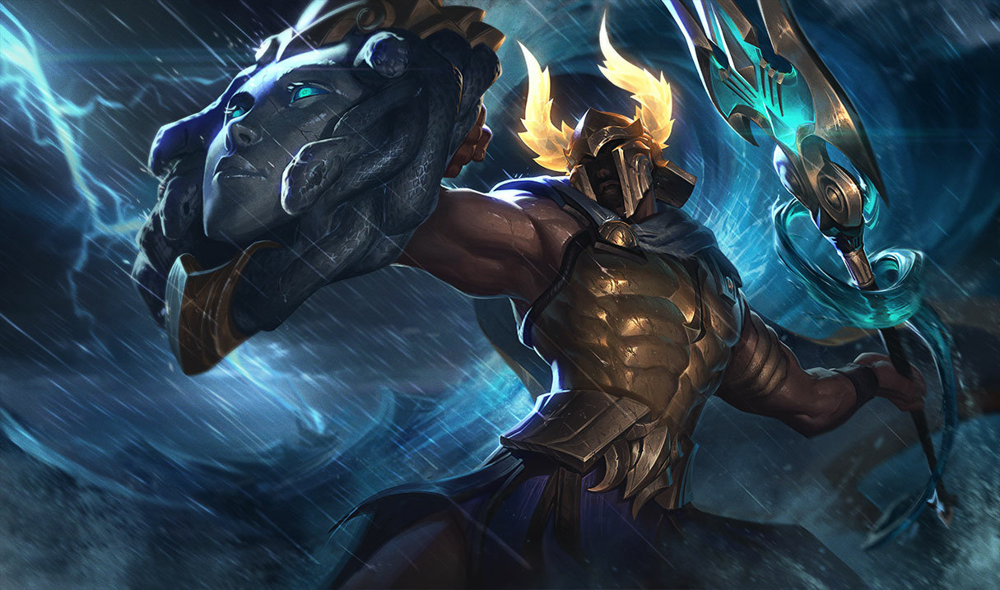

Ahri
Com uma conexão inata com o poder latente de Runeterra, Ahri é uma vastaya predatória, Ahri conserva um senso de empatia ao receber flashes de memória das almas que ela consome.
Annie
Perigosa, mas adoravelmente precoce, Annie é uma pequena maga com imenso poder piromaníaco. Mesmo isolada nas sombras das montanhas ao norte de Noxus, ela causa estranhamento com sua magia. Sua afinidade natural com o fogo já era evidente desde a primeira infância, quando ela tinha explosões emocionais imprevisíveis.
Anivia
Anivia é uma antiga semideusa freljordana que representa o ciclo eterno de vida, morte e renascimento, intrinsecamente associado à mudança das estações. Para aqueles que a veneram, ela é a alma elemental de Freljord, um símbolo de esperança e a catalisadora sagrada da transformação.

Phanteon
Perigosa, mas adoravelmente precoce, Annie é uma pequena maga com imenso poder piromaníaco. Mesmo isolada nas sombras das montanhas ao norte de Noxus, ela causa estranhamento com sua magia. Sua afinidade natural com o fogo já era evidente desde a primeira infância, quando ela tinha explosões emocionais imprevisíveis.